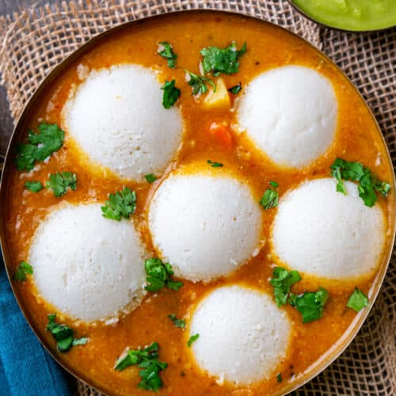
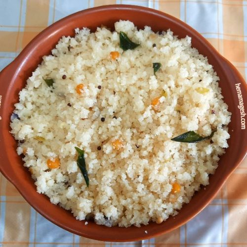

| Masala Dosa |
 |
₹120 |
Crispy rice crepe filled with spiced potato, a Bangalore favorite. |
| Idli & Sambar |
 |
₹80 |
Steamed rice cakes served with tangy sambar and chutney. |
| Vada |
 |
₹60 |
Crispy lentil fritter, often served with sambar and coconut chutney. |
| Bisi Bele Bath |
 |
₹110 |
Spicy, flavorful rice and lentil dish from Karnataka, popular in Bangalore. |
| Mysore Masala Dosa |
 |
₹140 |
Variant with a spicy chutney spread inside rich flavor. |
| Chicken Biryani (Hyderabadi style) |
 |
₹220 |
Aromatic biryani commonly enjoyed across Bangalore served with raita. |
| Rava Upma |
 |
₹70 |
Semi-porridge of semolina with mustard seeds, curry leaves and vegetables. |